JTBD 1
When I am saving for a vacation, a new device, an emergency fund, or another major purchase, I want to set a goal and track my progress, so I can stay motivated and see that the goal is achievable
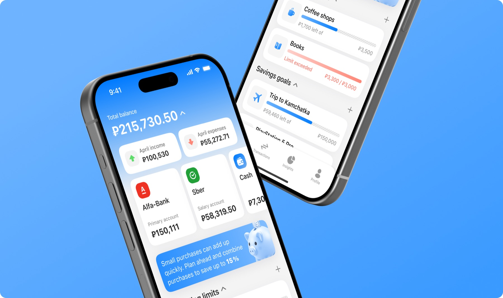
Design a mobile personal finance app that combines the ease of modern banking with tools for spending analysis, financial planning, and budget management
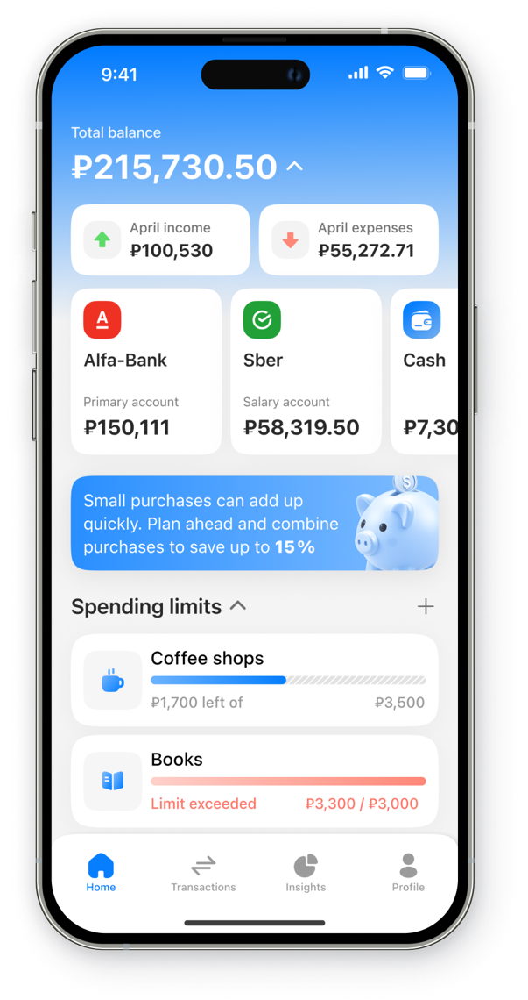
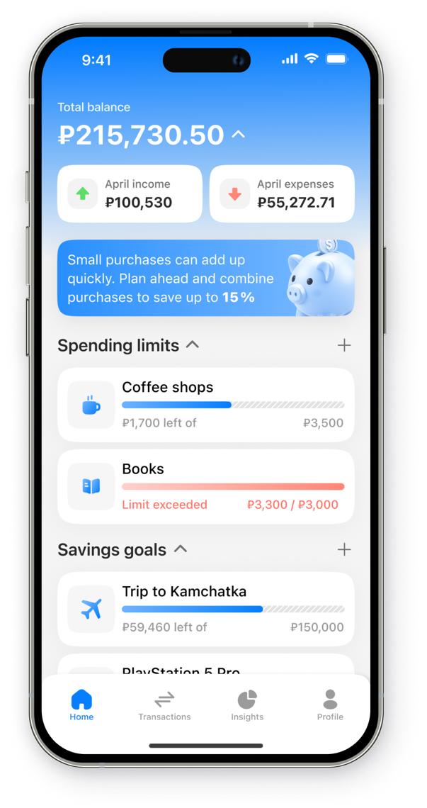
Users expect personal finance apps to feel as simple and intuitive as modern banking products, but many existing solutions make it difficult to understand spending, plan ahead, and stay in control of a budget
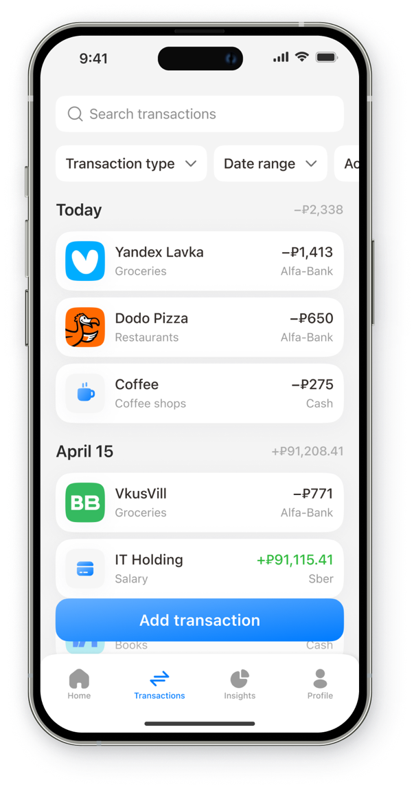
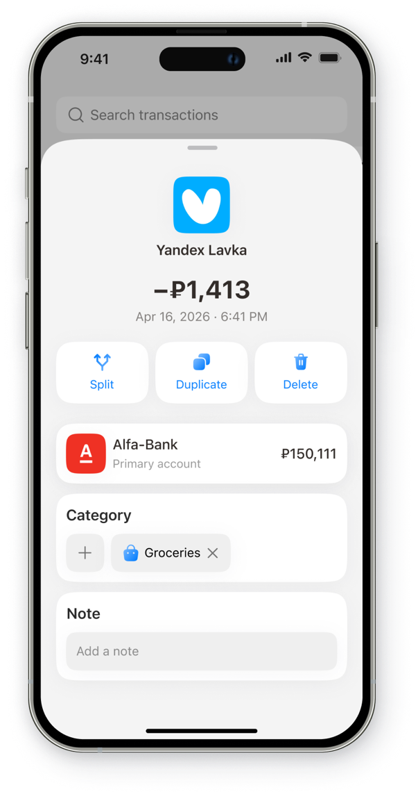
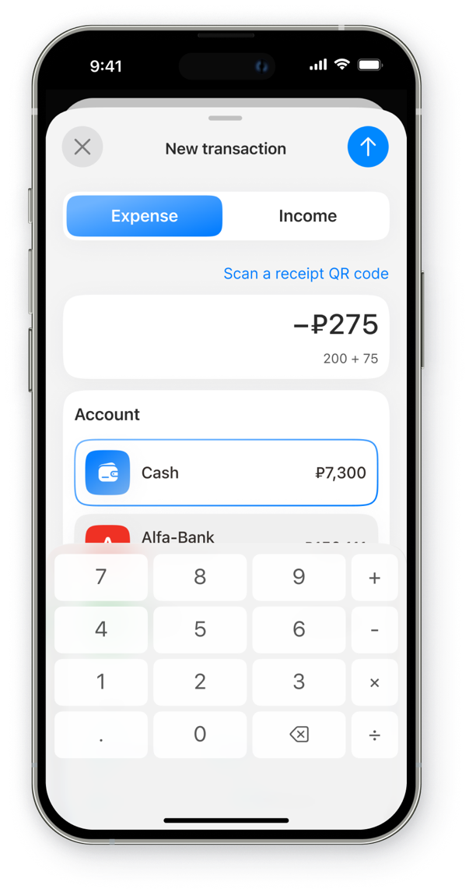
When I am saving for a vacation, a new device, an emergency fund, or another major purchase, I want to set a goal and track my progress, so I can stay motivated and see that the goal is achievable
When I have less money left at the end of the month than I expected, I want to understand where my money went by spending category, so I can identify overspending and adjust my budget
When I am working to build healthier financial habits, I want to see how my spending and saving habits change over time, so I can understand what works and make better financial decisions
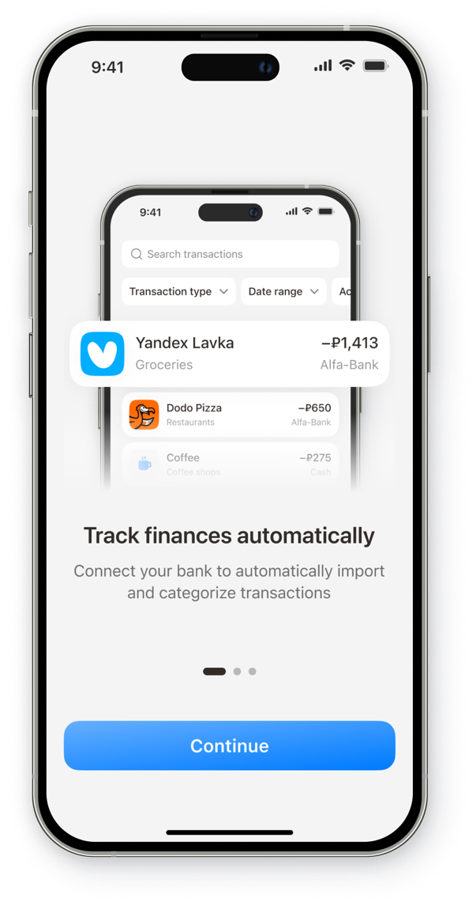
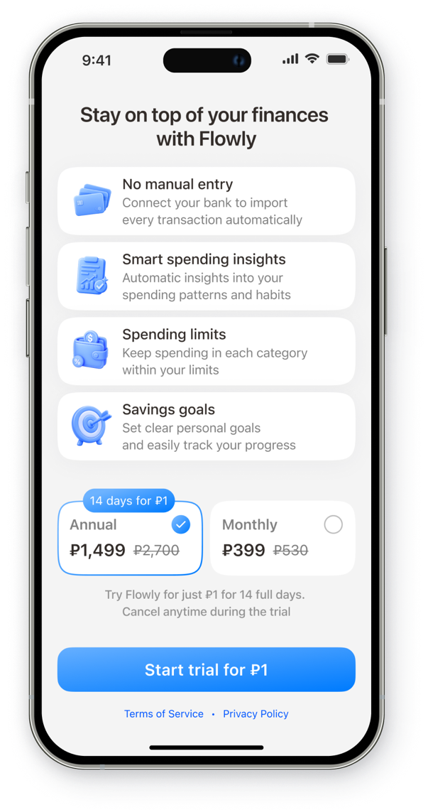
I benchmarked personal finance and banking apps, comparing their core features, information architecture, and key transaction flows. I focused on automatic bank syncing and manual expense entry to identify opportunities for a simpler, more intuitive experience.
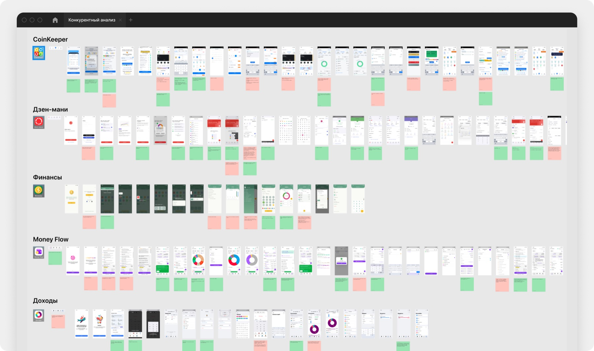
If users receive personalized daily insights based on their financial activity, then they will return to the app more often to track changes and act on recommendations
If income and expense visualizations are simple and easy to interpret, then users will understand their cash flow faster and make more informed budget decisions
If users can set savings goals and track their progress, then they will be more likely to save regularly and stay motivated
If users can see their accounts, income, expenses, and budgets in one place, then they will spend less time tracking money manually and feel more in control of their finances
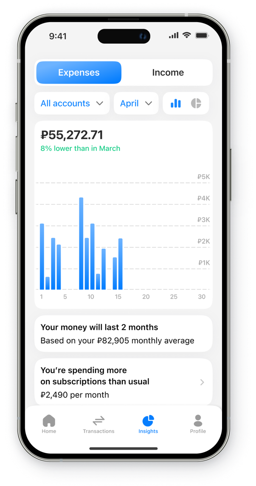
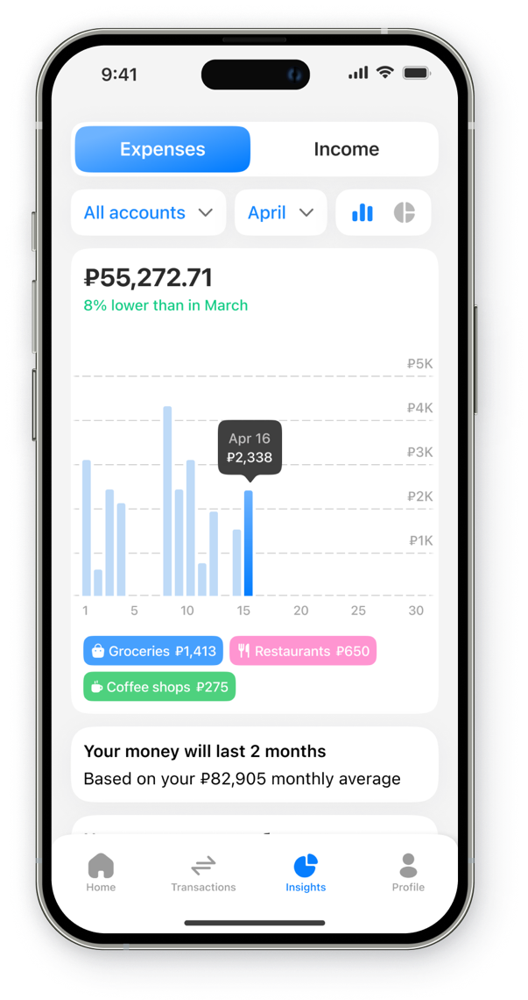
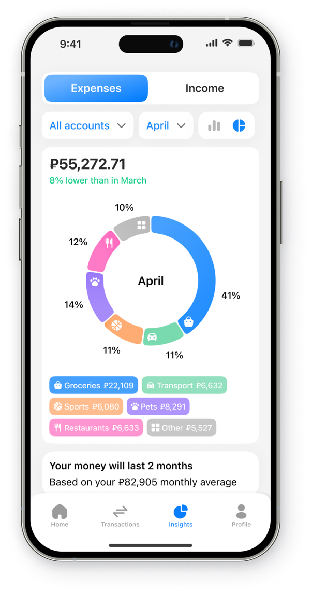
I used my transaction history as an exploratory dataset to identify recurring spending patterns and generate candidate insights. I then evaluated them against the JTBD and selected the most relevant, actionable recommendations for the MVP.

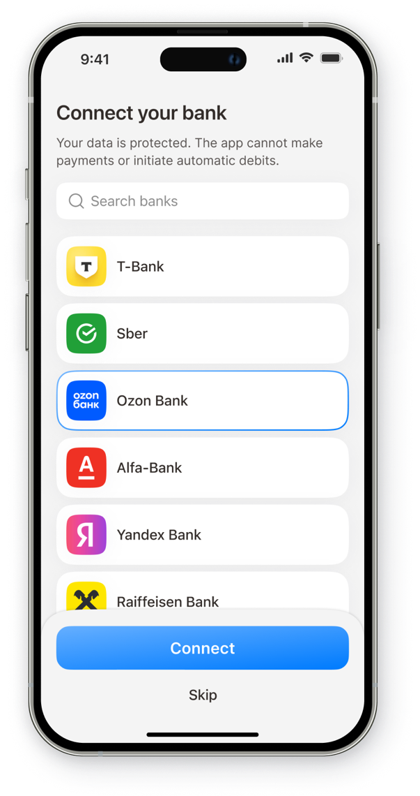

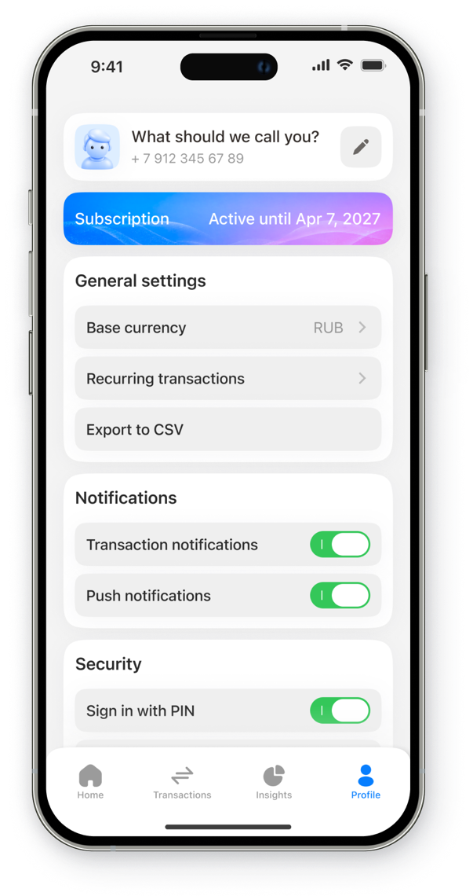
I designed and validated the core MVP flows for transaction tracking, spending analysis, budget management, and savings goals. Usability testing informed key iterations, resulting in a simpler, more cohesive experience that helps users understand their finances and take action